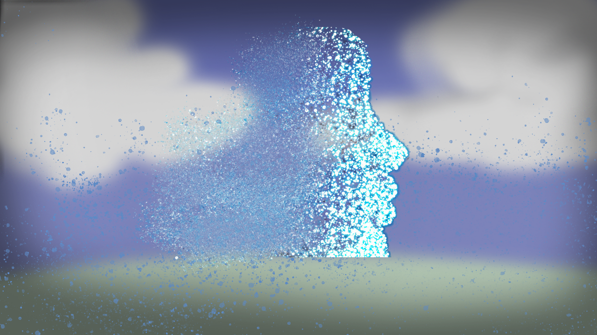

Take me where the wind goes
>

When I first began college I was overwhelmed with anxiety and pressure was building up inside me. I used to be so scared of meeting new people. I was fearful of messing up and embarrassing myself. Especially coming in as an artist I believed that the quality of your work is what mattered the most. As I went through my first semester I met new friends who were supportive of my work. I found out that one should not worry about new life experiences and to let life just be. That is how this piece came to be, I made it in photoshop and it is possibly one of the first images I made in digital format.